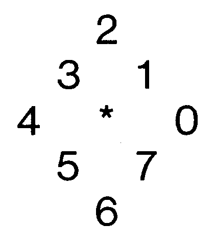

Turtle-Grafik: Die schnelle Schildkröte
Eine Basic-Erweiterung, die Logo überflüssig macht, das ist die Turtle-Grafik. Mit einfachen Basic-Befehlen lassen sich sehr schnell wunderschöne Grafiken erstellen.
Turtle-Grafik ist eine Spracherweiterung, die es in sich hat. Vollständig in Maschinensprache geschrieben, stellt sie einige Befehle zur Verfügung, mit denen Sie komfortabel sehr schnell Bilder erzeugen können.
TODO -> 11/84 p.48
0 rem t u r t l e d e m o
1 rem by peter menke
2 :
3 hires 1,0,0:color15:clear
4 :
10 rem roboter-kopf
20 plot 120,160
30 deg 2:move 10
40 deg 0:move 30
50 deg 2:move 10
55 deg 4:move 40
60 deg 2:move 100
65 deg 0:move 100
70 deg 6:move 100
90 deg 4:move 40
100 deg 6:move 10
110 deg 0:move 30
120 deg 6:move 10
121 :
122 rem linkes ohr
130 plot 110,105
140 deg 4:move 15
150 deg 2:move 30
160 deg 0:move 15
161 :
162 rem rechtes ohr
170 plot 210,105
180 deg 0:move 15
190 deg 2:move 30
200 deg 4:move 15
201 :
202 rem mund
210 plot 130,120
220 deg 6:move 10
230 deg 0:move 60
240 deg 2:move 10
241 :
242 rem nase
250 plot 152,100
260 deg 0:move 16
270 deg 3:move 8
280 deg 4:move 1
290 deg 5:move 8
291 :
292 rem linkes auge
293 plot 130,60:deg 0
295 fort=1to4
300 move 15
310 rturn2
320 next
330 :
340 rem rechtes auge
350 plot 190,60:deg 6
360 fort=1to4
370 move 15
380 rturn 2
390 next
400 :
410 window 1:print"{clr}{f5} t u r t l e d e m o"
420 print"{down} by peter menke"
430 fori=0to4000:next
440 window 0
450 :
460 :
461 rem spirale
470 hires 1,2,2:color 0:clear:plot 160,100
480 fori=1to66
490 lturn 1
500 move i
510 next
511 fori=1to1000:next
520 :
530 :
540 rem viereck-spiralen
541 clear:color1
550 hires 1,2,2:fori=1to200step2
560 rturn 2:move i:next
561 plot 160,100
570 fori=1to195step2
580 lturn 2:move i:next
590 plot 160,100
600 fori=1to195
610 rturn 2:move i:next
620 :
630 :
640 rem muster
641 hires1,5,5:clear:color0
650 fori=1to45
660 forx=0to7
670 rturnx
671 move i
680 nextx
700 next
710 :
720 hires1,5,5
730 fori=1to45
740 forx=0to7
750 lturnx
761 movei
780 nextx
790 next
800 fori=1to2000:next
810 :
820 :
830 rem pyramiden
840 hires1,6,6:clear:color15
850 fori=1to33
860 forx=0to7
870 deg x
871 move i
880 nextx
900 next
910 :
930 fori=1to33
940 forx=0to7
950 deg 7-x
961 move i
980 nextx
990 next
991 fori=1to8:trap
992 forx=1to500:next
993 next
1000 :
1010 :
1011 rem inverses muster
1020 hires7,7:color 0:clear
1030 fory=1to4:hires 1:else 2
1040 fori=1to100
1050 move i
1060 forx=1to7
1070 lturn x:movex:nextx,i,y
1080 :
1090 :
1111 rem strich-muster
1120 hires1,8,8:color 0:clear
1130 fory=1to4:hires 1:else2
1140 fori=1to45
1150 move i
1160 forx=1to10
1170 rturn x:move x:nextx,i,y
1181 :
1182 :
1183 rem joystick zeichnen
1184 hires 1,10,10:color0:clear
1185 window1
1186 print"{clr}{f5} joystick-zeichnen (port 2)"
1187 print" weiter mit f7"
1188 joystick5
1189 :
1190 :
1191 rem lightpen zeichnen
1192 hires 1,1,1:color0:clear
1193 window1
1194 print"{clr}{f5} lightpen-zeichnen (port 1)"
1195 print" weiter mit f7"
1196 graphic
1197 :
1198 :
1200 rem zufall
1210 hires 1:clear:color 1,9,9
1220 window 1
1230 print"{clr}{f5}zufallsmuster
1240 print"schluss mit run/stop-taste
1250 deg rnd(1)*8:move 1:goto1250